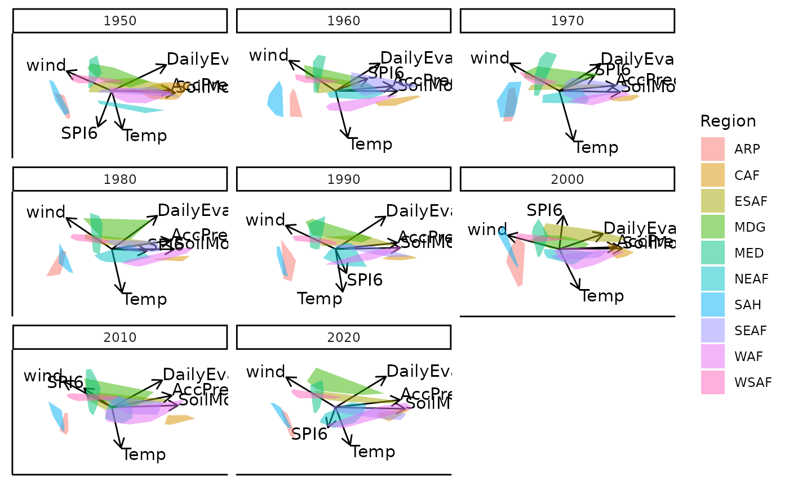
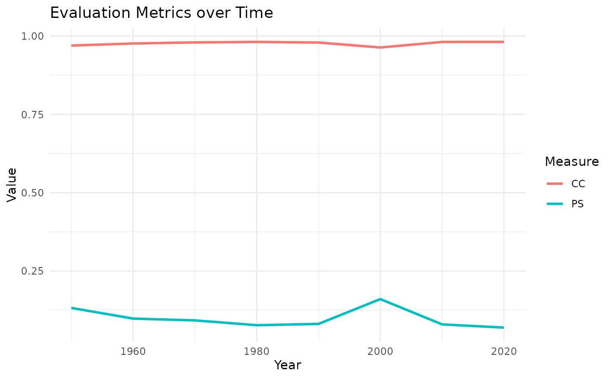
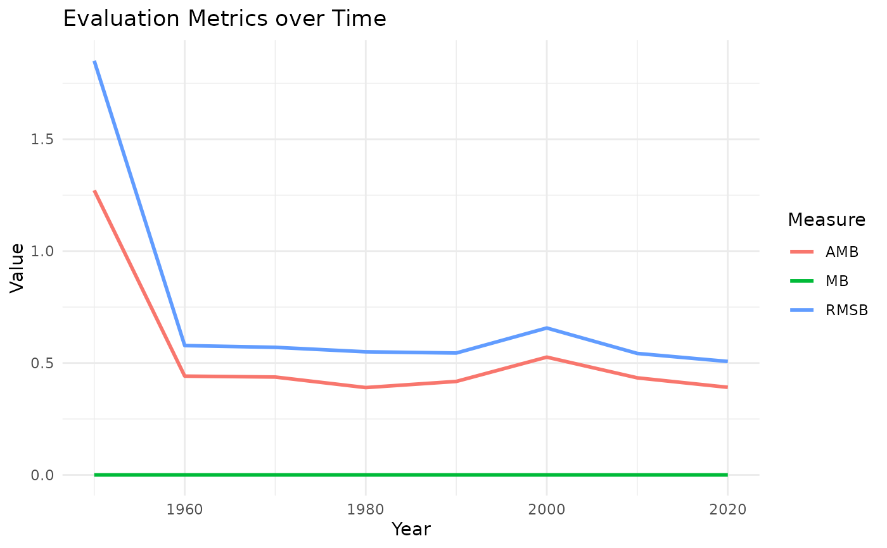
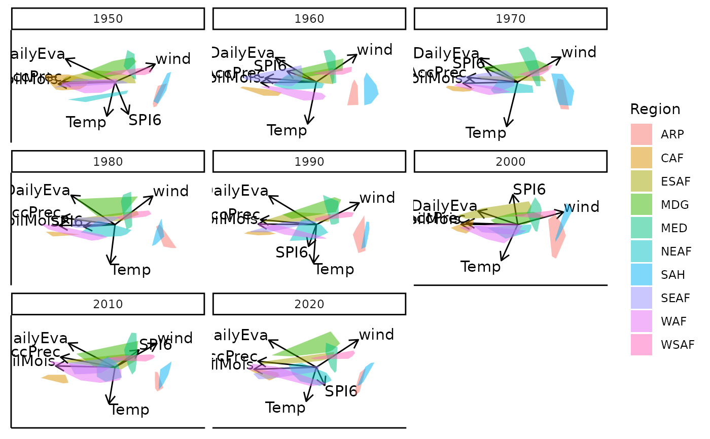
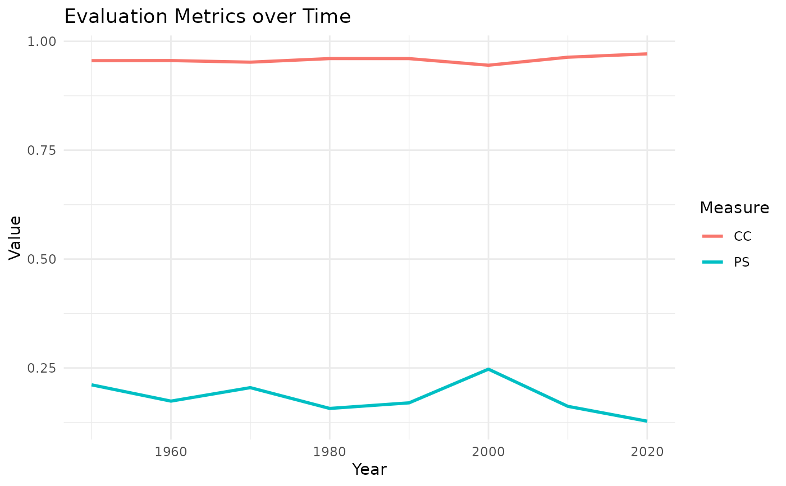
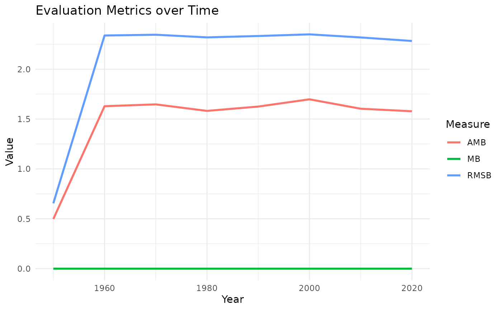

Measures of comparison for move plot 3
evaluation.RdThis function calculates measures of comparison after generalised orthogonal Procrustes Analysis
is performed in moveplot3. Orthogonal Procrustes Analysis is used to compare a target to a testee configuration.
The following measures are calculate: Procrustes Statistic (PS), Congruence Coefficient (CC), Absolute Mean Bias (AMB),
Mean Bias (MB) and Root Mean Squared Bias (RMSB).
Value
- eval.tab
Returns a table of the measures of comparison for each level of the time variable compared to the target.
- fit.plot
Returns a line plot with the fit measures that are bounded between zero and one: PS and CC. A small PS value and large CC value indicate good fit.
- bias.plot
Returns a line plot with bias measures that are unbounded: AMB, MB and RMSB. Small values indicate low bias.
Examples
data(Africa_climate)
data(Africa_climate_target)
bp <- biplotEZ::biplot(Africa_climate, scaled = TRUE) |> biplotEZ::PCA()
results <- bp |> moveplot3(time.var = "Year", group.var = "Region", hulls = TRUE,
move = FALSE, target = NULL) |> evaluation()

results$eval.tab
#>
#>
#> Table: Measures of comparison
#>
#> | | PS | CC | AMB | MB | RMSB |
#> |:---------------|:-----:|:-----:|:-----:|:--:|:-----:|
#> |Target vs. 1950 | 0.132 | 0.970 | 1.272 | 0 | 1.851 |
#> |Target vs. 1960 | 0.098 | 0.976 | 0.441 | 0 | 0.578 |
#> |Target vs. 1970 | 0.092 | 0.980 | 0.437 | 0 | 0.570 |
#> |Target vs. 1980 | 0.077 | 0.981 | 0.390 | 0 | 0.550 |
#> |Target vs. 1990 | 0.081 | 0.979 | 0.418 | 0 | 0.545 |
#> |Target vs. 2000 | 0.160 | 0.964 | 0.526 | 0 | 0.656 |
#> |Target vs. 2010 | 0.080 | 0.981 | 0.434 | 0 | 0.543 |
#> |Target vs. 2020 | 0.069 | 0.981 | 0.391 | 0 | 0.507 |
results$fit.plot

results$bias.plot

data(Africa_climate)
data(Africa_climate_target)
bp <- biplotEZ::biplot(Africa_climate, scaled = TRUE) |> biplotEZ::PCA()
results <- bp |> moveplot3(time.var = "Year", group.var = "Region", hulls = TRUE,
move = FALSE, target = Africa_climate_target) |> evaluation()

results$eval.tab
#>
#>
#> Table: Measures of comparison
#>
#> | | PS | CC | AMB | MB | RMSB |
#> |:---------------|:-----:|:-----:|:-----:|:--:|:-----:|
#> |Target vs. 1950 | 0.211 | 0.956 | 0.498 | 0 | 0.655 |
#> |Target vs. 1960 | 0.174 | 0.956 | 1.629 | 0 | 2.337 |
#> |Target vs. 1970 | 0.205 | 0.952 | 1.647 | 0 | 2.345 |
#> |Target vs. 1980 | 0.157 | 0.960 | 1.582 | 0 | 2.319 |
#> |Target vs. 1990 | 0.170 | 0.960 | 1.625 | 0 | 2.332 |
#> |Target vs. 2000 | 0.247 | 0.945 | 1.698 | 0 | 2.349 |
#> |Target vs. 2010 | 0.162 | 0.964 | 1.603 | 0 | 2.318 |
#> |Target vs. 2020 | 0.128 | 0.971 | 1.578 | 0 | 2.283 |
results$fit.plot

results$bias.plot
